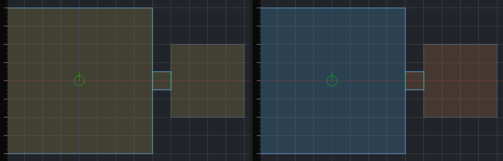

Draft. Not listed on the blog and not indexed.
Hammerite's sound propagation
In a stealth game you listen as much as you look. A guard's footsteps should come from the doorway they are behind, not through the wall, and a door you close should make the room quieter. Hammerite moves sound through a level the way the rooms allow, and it goes a step further than the classic stealth games with rain and wind, which come from the outdoors rather than from a point.

The Thief formula
Thief: The Dark Project did this in 1998. Its sounds were propagated through the level's geometry, so a guard heard a sound from the direction it really came from, and a sound carried a meaning the AI could react to. Sound went through doorways and not through walls, and a closed door made it quieter. To make that work, the level designer placed the rooms sound travelled through by hand, in the editor, around the level's geometry.
Hammerite keeps the formula and drops the hand work. The level is carved out of solid, so the compiler already knows every room and every opening between them. The audio graph is built from that, with one button. On top of the formula, Hammerite adds reverb from each room's size and surfaces, and weather that is heard through the way out.
The audio graph
The graph is built from the compiled world in three steps:
- Zones. Rooms that flow into each other through an overlap are one space, so they become one zone. Rooms that meet through a doorway or a window stay separate zones.
- Portals. Every opening between two zones becomes a portal: its position, its area, and its name if it has one.
- Edges. The nodes of the graph are the portals, not the rooms. Two portals that open into the same zone are joined by an edge, since sound that comes in through one can go out through the other. If the two openings can see each other the edge is a straight line. If not, the sound has to go round a corner, and the edge goes through the middle of the room.
The graph is saved with the map, one for each level variant. It also carries a fingerprint of the world it was built from, so the editor says when an edit has made it out of date.
On my reference level, an imported Thief mission with 1,208 zones and about 1,800 portals, the graph builds in 1.7 seconds. The first version took 204 seconds to group the zones and hours for the rest.
Finding the way a sound takes
Every frame, each playing sound is placed for the listener:
- Same room: the sound plays where it is, quieter with distance.
- In sight: if a straight line from the sound to the listener stays in the air, it plays where it is too, and any door that line passes through counts against it.
- Anywhere else: the sound starts at the nearest opening, and Dijkstra's algorithm searches the graph for an opening that the listener can see. Edges with line of sight cost 1 and edges round a corner cost 1000, so the search prefers a route the sound could travel in straight hops. The sound then plays at the last opening on the route: a guard in the next room is heard from the doorway, the way you would hear them in life.
Along the route the sound loses level for the distance it travelled, for air absorption, and for every door it passed. It also gets duller: the cutoff of its low-pass filter falls an octave for every 6 dB of doors, and a little more for every corner and every few hundred units of distance.
Routes are cached on a 32-unit grid and only searched again when the sound or the listener has moved, or a door has changed. A search takes 1.5 to 2 milliseconds on the reference level. The first version in GDScript took 65 to 123.
Doors
A door, a hatch or a window that can be shut is a named opening. The game sets how shut it is, from 0 to 1, and Hammerite charges that share of the opening's closed loss, 40 dB by default, to every sound that passes through it. A shut door does not change the route, only how much comes through. The opening's name lives on the face it is cut from, so it survives every edit, and the navigation reads the same name to know whether a guard can walk through.
Reverb
Each zone is given a reverb preset when the graph is built. The preset comes from the room's size, its shape, what its walls are made of and how much of it is open sky:
- A room under about 192 units across is small, and one over 480 is large.
- A long, narrow room is a corridor.
- The walls are weighed by area, and each texture maps to a material, such as stone, wood or plaster, from its name or from the game's own table.
- A room open to the sky is outdoors or a courtyard.
There are sixteen presets, all kept tight rather than cathedral-like, because a level is mostly small rooms. The reverb follows the listener and is blended with the rooms behind the nearby openings, so walking from a stone hall into a wooden room is a crossfade. The pre-delay comes from the room's size, and an equaliser after the reverb takes the high frequencies out of rooms that absorb them.
Under water, everything goes through a 700 Hz low-pass filter, and sound crossing the water's surface loses 18 dB.
Playing it in Godot
Hammerite plays its sounds through Godot's own audio system, and does the propagation itself:
- A pool of players. Up to 64
AudioStreamPlayer3Dnodes are made as they are needed, and reused. Godot's own distance attenuation is turned off: Hammerite sets the volume, and the player's position is only used for panning. - Virtual voices. A sound only holds a player while it can be heard. A one-shot that would arrive 40 dB down or more is not played at all, but still reports itself as playing for its length, so the game sees no difference. A looping sound keeps its player.
- A ladder of buses. Godot has no low-pass filter per player, so Hammerite makes six buses with low-pass filters at 8,000, 4,000, 2,000, 900, 450 and 200 Hz, and sends each sound to the one nearest its cutoff, measured in octaves. All of them feed one Hammerite bus, which holds the reverb, the equaliser and the underwater filter.
- The listener is the current camera's
AudioListener3D, or the camera itself.
Rain, wind and the way out
The Thief formula is made for sounds that come from a point: footsteps, a lever, a guard talking. Rain and wind come from everywhere outdoors. Indoors, you hear them through the windows and the doors that lead outside, louder the closer you are to the way out. Hammerite handles these environmental sounds on their own.
First, every zone has a type:
- Exterior: the room is open to the sky itself, because its own walls include sky faces. Weather is heard all round, at full level.
- Interior: every other room. Weather comes in through the way out.
- Semi-exterior: set by the level designer, for an awning, an archway or a covered market. Its weather exposure, from 0 to 1, puts it between the two.
This is a different question than the one the lightmapper asks. For light, a room with a window onto a courtyard is exterior, because daylight comes in through the window. For sound it is interior: the rain is at the window, not overhead.

Indoors, the question is how far it is to the outdoors from each way out. The graph answers that once, when it is built. For each side of each opening, it searches for the nearest opening into an exterior zone, and stores the distance and the openings along the way. These searches run in parallel on all cores. In GDScript they took 110 seconds on a level with a little sky; in native code they take 0.57.
At runtime, weather never searches the graph. For each opening of the listener's room it adds the distance from the listener to the opening and the stored distance from the opening to the outdoors, and charges the sound for that, for being indoors, and for any door along the stored way. The rain then plays at up to four openings, each at its own place and level, so a room with windows on two sides hears the rain on both sides. The cost per frame depends only on how many openings the listener's room has.
A looping sound must not restart. The nearest opening keeps the sound's own player. Each further opening borrows a player from the pool, starts it at the same playback position, and fades it in. Moving between rooms glides the sound from one opening to the next, so walking in from the street is a fade, never a step.
Each room can also have an ambient bed of its own, like the hum of a machine room or birdsong in a garden. Rooms with the same bed share one player, and moving between beds is a two-second crossfade.
Guards hear the same sounds
The game reports a sound with a type, such as a footstep on metal or a door, and a loudness. For every guard that listens for that type, Hammerite finds the route the same way it does for the player and works out how loud the sound is when it reaches them. A guard whose threshold it beats gets an event with the level, whether the sound came straight or round a corner, and where it seemed to come from: the doorway it arrived through. So the guard goes to look in the doorway, not into the wall.
Hammerite measures the sound and the game decides what it means. The types, how loud they are, each guard's hearing and what a guard does about it are all the game's.
Limits
- Sound never goes through walls. A thin wall is as thick as any other.
- Each sound takes one route. Two doorways into the same room do not add up.
- The reverb is the listener's room, blended with the rooms next to it. A sound from far away gets the reverb of the room you are in.
- Semi-exterior rooms have to be marked by hand. The compiler cannot tell an awning from a ceiling.
- The pool has 64 players by default, and a sound that finds none free is not played.
Prior art
- Looking Glass Studios. Thief: The Dark Project, 1998. Sound propagated through the level's rooms and doorways, heard by the AI and the player alike.
- Tom Leonard. Building an AI sensory system: examining the design of Thief: The Dark Project. Game Developer, 2003.
- Deus Ex: Invisible War developer diary, on a propagation system very like Thief's.
- Stepan Boev. Sound propagation in Hitman. GDC Europe 2015. Rooms and portals, with occlusion per room.
The Hammerite manual has a section on audio, and the docs a guide to hearing for stealth gameplay.
- Elli